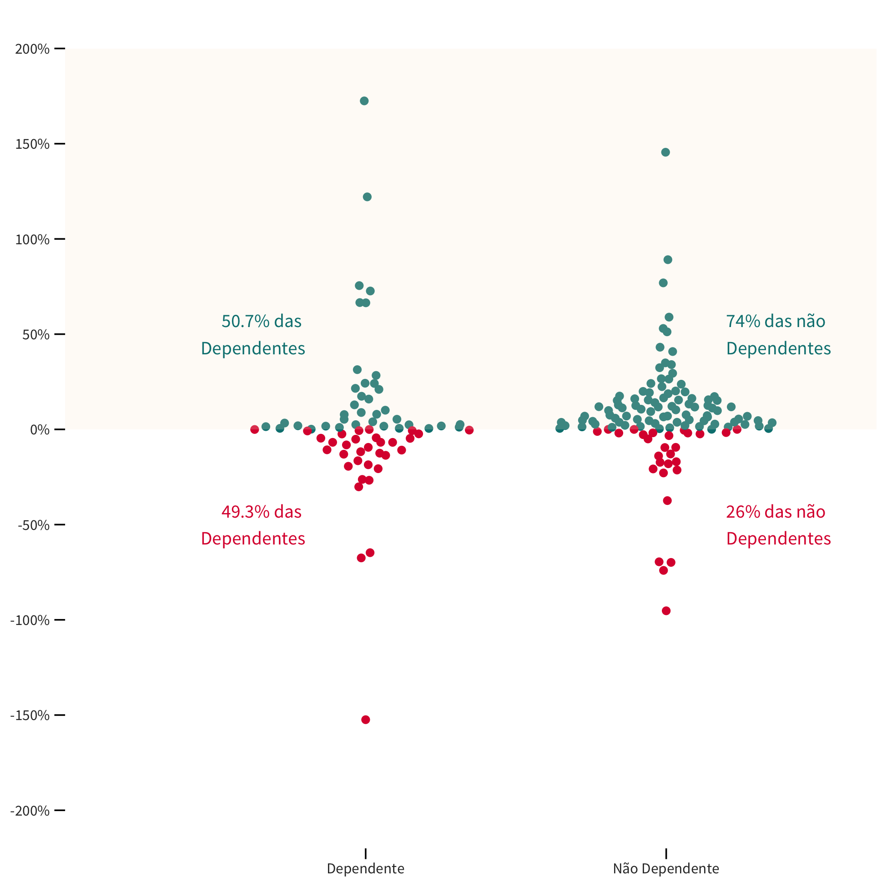

Fruto de intensivo esforço do Tesouro Nacional a fim de consolidar um grande volume de dados sobre o assunto, essa iniciativa reforça o compromisso da instituição com a transparência.
Entendemos que a transparência é o melhor instrumento para que a sociedade tenha condições de fiscalizar o papel dos governos estaduais enquanto donos de empresas tidas como estratégicas. Apenas com informações acessíveis, o cidadão será capaz de avaliar o quão vantajoso é ter um Estado empreendedor, podendo cobrar resultados ou questionar seus representantes.
Referentes ao ano de 2019, as informações apresentadas a seguir comparam os dados entre as 5 regiões territoriais (Nordeste, Norte, Centro-Oeste, Sudeste e Sul) e os vinte e seis Estados mais o Distrito Federal; contrapondo as empresas controladas por sua dependência/não dependência e distintos segmentos empresariais: Abastecimento, Comunicações, Desenvolvimento, Distribuição de Gás, Energia, Financeiro, Gestão de Ativos, Habitação e Urbanização, Informática, Mineração, Pesquisa e Assistência Técnica, Portos e Hidrovias, Saneamento, Saúde, Transportes, Turismo e outros.
As informações estão divididas em 3 partes:
- Com quantas estatais se faz um Estado;
- O Estado empreendedor e
- Quais os resultados das empresas para o Estado Acionista.
O primeiro bloco apresenta o quantitativo geral das empresas controladas pelos Estados e demonstra o quantitativo por Região / Estado e informa o total de empresas dependentes e quais seus respectivos segmentos. A segunda seção discorre sobre o lucro / prejuízo dessas empresas além de apresentar um ranking de suas respectivas rentabilidades. Por fim, apresenta-se o resultado total do impacto financeiro líquido das empresas controladas nas finanças públicas estaduais.
Os dados aqui disponibilizados foram declarados pelos Estados, sendo, portanto, de inteira responsabilidade deles a precisão ou correção dos dados aqui consolidados.
Com quantas estatais se faz um estado?
No Brasil, em 2019, existiam 263 empresas controladas pelos Estados. A região Nordeste apresenta a maior concentração de estatais, com 89 empresas (33,84% do total), seguida pela região sudeste, com 57 empresas (21,67%); centro-oeste, com 49 empresas (18,63%); norte do país com 34 empresas (12,93%) e, por fim, a região sul com 34 empresas (12,93%).
O mapa abaixo mostra como ficaria cada região brasileira caso sua área fosse aumentada ou reduzida na proporção das empresas estatais que possui.
O gráfico abaixo mostra a quantidade de estatais por Estado, separadas entre dependentes e não dependentes. Em termos relativos, 43% das empresas declaradas pelos Estados são dependentes, ou seja, 114 empresas do total de 263. O número de estatais por Estado varia de 2 a 21, sendo que alguns deles possuem apenas empresas dependentes, e outros apenas não dependentes.
Dessa forma, o Distrito Federal lidera o ranking com um total de 21 empresas, seguido por São Paulo com um quantitativo de 20 e, em terceiro lugar, Minas Gerais com 18. Entre os Estados com a menor quantidade de empresas controladas, temos Mato Grosso do Sul e Tocantins com, respectivamente, 3 e 2 empresas. Em termos de dependência, Rio de Janeiro apresenta o maior número de empresas (9), seguido pelo Distrito Federal (8) e, empatados com um total de 7 empresas, os Estados de Pernambuco, Sergipe, Acre e Mato Grosso. Ao focalizar em empresas não dependentes, Minas Gerais lidera com um conjunto de 15 empresas, acompanhada pelo Distrito Federal e por São Paulo (13), Goiás (12), Rio Grande Sul (11) e Paraná com um quantitativo de 10 empresas.
Quantidade de empresas por Estado
- Dependentes
- Não Dependentes
- Não Informado
Ao examinar as empresas controladas pelos segmentos empresarias, observa-se que os setores de Financeiro, Desenvolvimento e Saneamento são os mais representativos, com 31, 29, 23 empresas, respectivamente. Entre os seguimentos com menor número de empresas, destacam-se os setores de Saúde e Mineração (4).
Em relação ao critério dependência, o setor Pesquisa e Assistência Técnica possui o maior número de empresas dependentes (17), seguido pelo setor de Desenvolvimento e o de Habitação e Urbanização (14) e pelos de Abastecimento e Transportes com 10 empresas. Por outro lado, o setor Financeiro caracteriza-se pelo maior quantitativo de empresas não dependentes (27), seguido de perto pelo de Saneamento (24), Distribuição de Gás (15), Gestão de ativos (13) e Energia (11).
Quantidade de empresas por setor
- Dependentes
- Não Dependentes
- Não Informado

Uma combinação dessas informações (Estados / quantitativo empresas / setores empresarias) pode ser visualizada abaixo.
Quantidade de empresas por Estado e por setor

O estado empreendedor
A atuação do Estado por meio de empresas estatais tem previsão no artigo 173 da Constituição de 1988:
Art. 173. Ressalvados os casos previstos nesta Constituição, a exploração direta de atividade econômica pelo Estado só será permitida quando necessária aos imperativos da segurança nacional ou a relevante interesse coletivo, conforme definidos em lei.
Portanto, a atuação do Poder Público na atividade econômica, por meio de suas empresas, apresenta-se como uma exceção. Além disso, a fim de garantir o alcance do “relevante interesse coletivo”, a eficiência, a eficácia e a efetividade devem estar presentes na atuação das estatais.
Nesse sentido, é importante quantificar os lucros / prejuízos das empresas controladas pelos Estados, além de avaliar o patamar de rentabilidade das mesmas. O gráfico abaixo demonstra a distribuição dos lucros ou prejuízos, categorizado por dependentes e não dependentes. Ao longo de 2018, os números revelam que 35% das estatais obtiveram prejuízo. Ao se analisar especificamente as empresas não dependentes, tem-se que 26% delas tiveram perdas financeiras. Esse valor passa para 48,2% quando se leva em consideração apenas as estatais dependentes. Nesse sentido, observa-se que em termos relativos o percentual de empresas com prejuízos financeiros em 2019 caracterizadas como dependentes é pouco menos que o dobro do total das não dependentes.
Distribuição das empresas em relação ao lucro ou prejuízo
- Empresas com Prejuízo
- Empresas com Lucro
- Sem informação
Em termos de segmento empresarial, o setor que apresenta o maior lucro para o período foi o de Energia com um ganho total de mais de 6 bilhões de reais (R$ 6.129 milhões). Logo em seguida, tem-se o segmento de Saneamento com um resultado em torno de 4 bilhões de reais (R$ 3.922 milhões), e, na sequência, o setor de Desenvolvimento, com lucro de R$ 2 bilhões (R$ 2.031 milhões). Pelo outro lado, o setor de Gestão de Ativos possui o pior resultado para o período com prejuízos de aproximadamente 774 milhões de reais Em seguida, o segmento de Transportes com cerca de 337 milhões de reais em perdas e o setor de Pesquisa e Assistência Técnica 31 milhões de reais em prejuízo.
Lucros e Prejuízos totais por setor de atuação
- Prejuízo
- Lucro
Uma relação importante de se avaliar é o resultado da empresa (lucro / prejuízo) em relação ao tamanho do seu patrimônio. No diagrama abaixo, plota-se no eixo y (ordenada) o patrimônio líquido das empresas e no eixo x (abscissa) os lucros/prejuízos correspondentes. De forma simplificada, observa-se uma relação positiva entre a magnitude (positivo / negativo) do resultado apresentado e o correspondente patrimônio líquido. Este resultado já era de certa forma esperado pelo fato dos valores nominais para lucro / prejuízo divulgados estarem associados com o tamanho da empresa – representado aqui pelo seu patrimônio líquido.
Relação entre Lucro / Prejuízo e o Patrimônio Líquido das empresas
Passe o mouse sobre os pontos para obter detalhes sobre a empresa. É possível selecionar uma área para zoom (clicando-se duas vezes sobre o gráfico retorna-se à visão principal).
Dessa forma, uma maneira complementar de se comparar os retornos dos diferentes setores analisados é por meio de um indicador de rentabilidade que pondere a magnitude do resultado da companhia pelo seu tamanho. Nessa linha de raciocínio, elaboramos um indicador calculado pela razão entre o lucro / prejuízo e o patrimônio líquido que representa uma estimativa da rentabilidade das empresas controladas pelos Estados. O gráfico abaixo apresenta os principais resultados.
Estimativa de rentabilidade das empresas
Rentabilidade definida como a razão entre lucro ou prejuízo e patrimônio líquido. As empresas são representadas por pontos, da seguinte forma:
● rentabilidade positiva ● rentabilidade negativa
Estão excluídas 63 empresas sem informação de lucro / prejuízo ou patrimônio líquido, ou que apresentaram patrimônio líquido menor ou igual a zero. Para uma melhor visualização, não estão apresentadas 8 empresas para as quais o valor do indicador de rentabilidade ficou abaixo de -200%, e 4 empresas para quais o indicador de rentabilidade foi superior a +200%.

Novamente, observa-se a conclusão que a quantidade relativa de estatais dependentes com rentabilidade negativa (49,3%) é pouco menos que o dobro do valor em comparação com as estatais não dependentes (26%). Ao se explorar os números das rentabilidades pelo critério de dependência e por segmentos empresariais, verifica-se que o as empresas do setor Portos e Hidrovias que são dependentes possuem a maior média de rentabilidade para o ano de 2019, com uma cifra de 77%. Também se destacam as empresas não dependentes de Desenvolvimento, Distribuição de Gás, Saúde e Energia, com rentabilidades médias de 55%, 25%, 24% e 21% respectivamente. Com rentabilidades médias negativas, ressaltam-se os segmentos de Transportes e Turismo.
Estimativa de rentabilidade média das empresas por setor
Rentabilidade definida como a razão entre lucro ou prejuízo e patrimônio líquido. Estão excluídas 76 empresas sem informação de lucro / prejuízo ou patrimônio líquido, ou que apresentaram patrimônio líquido menor ou igual a zero. Para evitar inviabilizar e distorcer a visualização, também está excluída a Companhia de Gás do Piauí, em razão de a rentabilidade calculada a partir dos dados declarados ter atingindo um valor de -6.650%. O tamanho dos pontos sugere a quantidade de empresas que foram consideradas no cálculo da média indicada.
- Média Dependentes
- Média Não Dependentes
Observar que a posição do ponto que ilustra a rentabilidade média das empresas dependentes no setor "OUTROS" não corresponde ao seu valor de -160%, para evitar achatar e dificultar a visualização de todos os demais pontos. Para indicar essa quebra na escala, a linha correspondente é tracejada, e não contínua.
O estado acionista
Quais os resultados das empresas para o Estado Acionista?
Há uma relação financeira entres os Estados e suas estatais que se dá, sobretudo, por meio de:
▲ Dividendos — recursos, decorrentes de uma parte do lucro apurado, que as estatais transferem para o Estado.
▼ Subvenções e Aumento de Capital — recursos que os Estados transferem para as empresas.
Quando os Estados recebem mais recursos por meio de dividendos do que transferem por meio de subvenções ou aumento de capital, pode-se dizer que as estatais contribuem para o resultado fiscal do Estado. No entanto, quando as saídas de recursos dos Estados são maiores que as entradas, podemos dizer que tais empresas oneram o resultado fiscal do Estado.
De forma geral, ao longo de 2019 ,os Estados transferiram R$ 2 bilhões como reforço de capital, R$ 4,4 bilhões como subvenções e receberam R$ 1,6 bilhões de dividendos das empresas, ou seja, houve repasses líquidos para as estatais da ordem de R$ 4,8 bilhões.
No entanto, é importante ressaltar que 71 das 263 empresas (27%) não informaram valores para quaisquer dessas operações — sejam dividendos, subvenções ou aumentos de capital.
O mapa abaixo mostra, em termos agregados, o resultado líquido (entradas menos saídas) dos Estados nas suas relações com as estatais estaduais. Em 2019, os únicos Estados que receberam mais recursos das estatais do que transferiram foram Minas Gerais, Mato Grosso do Sul e Rio Grande do Sul.